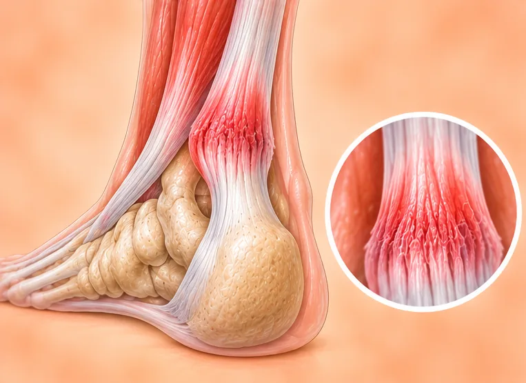
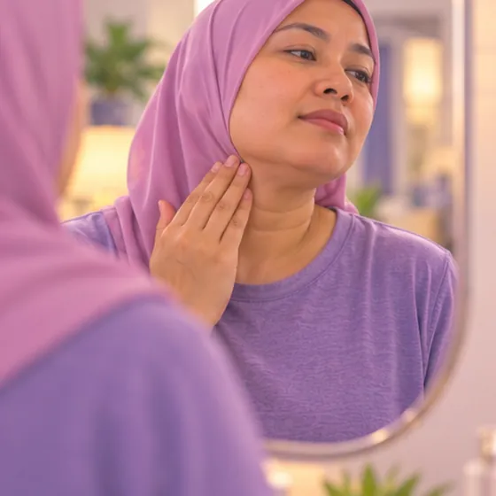
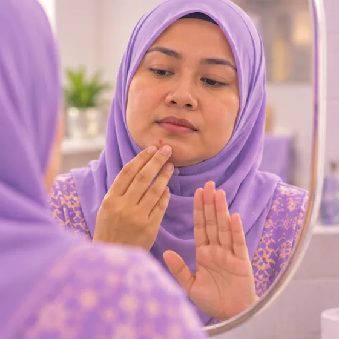

Tumor sel gergasi sarung tendon
Ketulan yang membesar perlahan dan biasanya tidak berbahaya berhampiran sendi, tendon atau jari
Apa itu
Ketulan keras membesar perlahan pada sarung tendon, paling kerap di jari atau tangan. Ia biasanya bukan kanser, tetapi perlu diperiksa oleh doktor.
- Jari, tangan atau kaki
- Orang dewasa, selalunya separuh umur
- Ketulan keras, membesar perlahan
- Jumpa doktor
- Doktor keluarga, kemudian pakar bedah tangan atau tulang
- Biasa pada
- Orang dewasa, paling kerap pada tangan
- Berjangkit
- Tidak
- Perjalanan
- Membesar perlahan; doktor akan memeriksa dan menerangkan langkah seterusnya
Tanda biasa
Ketulan di bawah kulitKetulan subkutaneus
Tanda-tanda lain
- Ketulan perlahan-lahan membesar dalam beberapa bulan
- Jari atau sendi berhampiran terasa kaku dan kurang bergerak
- Kadang-kadang kebas atau kesemutan jika ketulan menekan saraf
Mengapa ia berlaku
Punca belum diketahui sepenuhnyaIdiopatik
Punca lain
- Ia pertumbuhan sel pada sarung tendon dan biasanya bukan kanser
- Ia bukan disebabkan oleh apa yang anda lakukan atau makan
- Ia boleh berulang selepas dibuang, jadi susulan dengan doktor penting
Jumpa doktor dahulu jika
- Sebarang ketulan baru yang terus membesar, walaupun tidak sakit: jumpa doktor segera
- Ketulan yang membesar cepat, menjadi sangat keras atau melekat pada kulit
- Kebas, lemah atau jari yang tidak boleh dibengkokkan atau diluruskan
- Merah, panas, nanah atau demam bersama ketulan
- Ketulan dengan berat badan turun atau gejala baru lain yang berpanjangan
Jika mana-mana berkenaan, sila jumpa doktor sebelum sesi.
Halaman ini ialah maklumat am. Sila terus mengambil ubat biasa anda dan terus berjumpa doktor.
Teruskan mengambil ubat biasa anda dan terus berjumpa doktor. Sesi kami ialah sokongan lembut dan tidak menggantikan rawatan perubatan.
Menjaga diri

Periksa ketulan baharu dan perubahanPemeriksaan diri 
Jangan picit atau korekJangan sentuh Teruskan ujian berkalaPemantauan
Lebih banyak cara menjaga diri
- Lindungi tangan daripada hentakan dan genggaman berat jika ia sakit
- Beritahu doktor jika ketulan berubah saiz, warna atau rasa
Beritahu ahli terapi anda
- Kanser atau rawatan kanser
- Ubat pencair darah
- Lengan kebas atau kesemutan
- Kulit luka, merah atau sakit
Ahli terapi anda akan menyemaknya bersama anda sebelum bermula.
Soalan dan jawapan
Apakah Tumor sel gergasi sarung tendon?
Ketulan yang membesar perlahan dan biasanya tidak berbahaya berhampiran sendi, tendon atau jari. Ketulan keras membesar perlahan pada sarung tendon, paling kerap di jari atau tangan. Ia biasanya bukan kanser, tetapi perlu diperiksa oleh doktor.
Apakah tanda biasa Tumor sel gergasi sarung tendon?
Ketulan di bawah kulit
Mengapa Tumor sel gergasi sarung tendon berlaku?
Punca belum diketahui sepenuhnya
Bagaimana menjaga diri dengan Tumor sel gergasi sarung tendon?
Periksa ketulan baharu dan perubahan · Jangan picit atau korek · Teruskan ujian berkala
Bolehkah sesi AI Body Master membantu Tumor sel gergasi sarung tendon?
Sesi ialah sokongan meridian tanpa jarum yang lembut untuk kesejahteraan anda. Ia tidak merawat atau menyembuhkan Tumor sel gergasi sarung tendon dan tidak menggantikan ubat atau doktor anda. Beritahu ahli terapi anda sebelum sesi bermula.
Keadaan berkaitan
Rujukan: General information based on public health sources such as Mayo Clinic, NHS, Cleveland Clinic and NCBI StatPearls.
Halaman dikemas kini: 2026-11-04